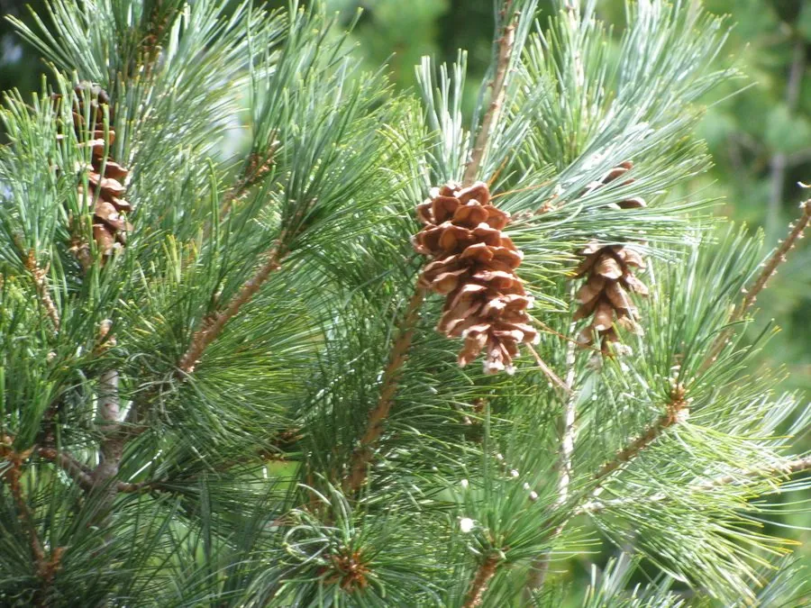

乔木 · 植物界
樟子松 Pinus sylvestris var. mongolica

松科松属常绿乔木，欧洲赤松的蒙古变种，耐寒耐旱，是大兴安岭与三北防护林工程的重要造林树种。
- 分类
- 门裸子植物门纲松柏纲目松柏目科松科属松属
- 栖息环境
- 寒温带针叶林与沙地，耐严寒、耐干旱瘠薄，常生于海拔 400–1200 米
- 地理分布
- 中国内蒙古大兴安岭、呼伦贝尔沙地及黑龙江沿岸；东北、华北、西北广泛引种
- 保护级别
- IUCN 暂无评估；天然林已受保护，人工林广泛栽培
物种志
樟子松为常绿乔木，高可达 25 米，树干通直，上部树皮淡黄褐色、下部灰褐色并呈块状开裂。针叶二针一束，长 4–9 厘米，稍扭曲，叶鞘宿存。雄球花黄色，雌球花紫红色，球果卵状圆锥形，长 3–6 厘米，成熟时淡黄褐色，种鳞张开后散出带翅种子。
本种是欧洲赤松的蒙古变种，天然分布于内蒙古大兴安岭北部、呼伦贝尔沙地及黑龙江沿岸，生于寒温带针叶林与沙地，耐严寒、耐干旱、耐瘠薄，能在 -40℃ 以下的低温中越冬，是“三北”防护林工程中最常用的针叶树种之一。它根系发达，固沙能力强，也常作北方城市绿化与用材林树种。木材纹理直、耐腐，可供建筑、枕木与家具；树干可割松脂。引种到沙地后需注意水分平衡，避免因地下水位下降而衰退。
形态与习性
- 株高可达 25 米，树干通直
- 针叶二针一束，长 4–9 厘米，稍扭曲
- 花期5–6 月，雄球花黄色
- 球果成熟翌年 9–10 月，球果淡黄褐色
- 光照强阳性，不耐庇荫
- 水分耐旱，沙地生长良好，忌积水
- 主要用途防风固沙、用材与北方城市绿化
趣味知识
- 樟子松是欧洲赤松的蒙古变种，并非独立物种，学名中的 var. mongolica 即“蒙古变种”。
- 它能在 -40℃ 以下的严寒中安全越冬，是东北与内蒙古最重要的耐寒针叶树之一。
- 呼伦贝尔沙地南缘的樟子松林带，是“三北”防护林工程的标志性成果。
- 樟子松的球果需要两年才成熟，第一年绿色，第二年才转为淡黄褐色。